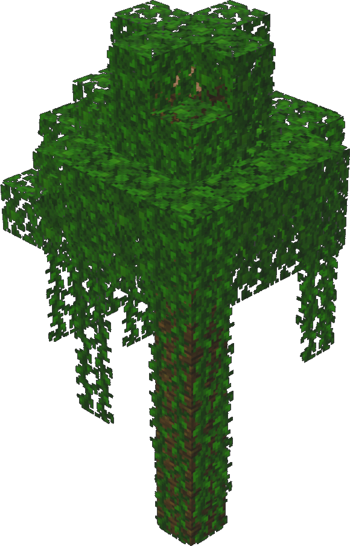
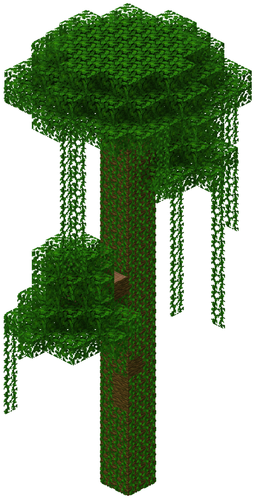
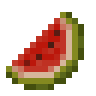
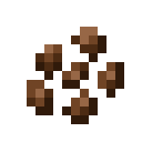

"Explore os biomas. Conheça a vida. Sobreviva ao mundo."
- Menu de Navegação
🌿Selva
Documentário oficial sobre a Selva
A Selva é um dos biomas mais densos, úmidos e ricos em biodiversidade do Minecraft. Caracterizada por
árvores extremamente altas, vegetação fechada e abundância de recursos naturais, ela pode oferecer
excelentes
oportunidades para jogadores preparados. Ao mesmo tempo, sua mata densa dificulta a orientação, reduz a
visibilidade e pode transformar uma simples caminhada em uma exploração complicada.
Por sua variedade de recursos, criaturas exclusivas e estruturas escondidas, a Selva é um ambiente
extremamente valioso. Entretanto, antes de se aventurar profundamente pelo bioma, é recomendável
conhecer
suas principais características e estar preparado para os desafios impostos pelo terreno.
Características do ambiente
A principal característica das selvas é a enorme quantidade de vegetação. Árvores, arbustos, samambaias,
trepadeiras e plantas ocupam praticamente todos os espaços disponíveis, formando uma floresta fechada e
frequentemente difícil de atravessar.
Vegetação da Selva com "Visuais Vibrantes"
O chão é predominantemente composto por blocos de grama de tonalidade verde intensa, muitos deles cobertos
por grama alta e samambaias. Entre as árvores também aparecem pequenos arbustos formados por folhas de
carvalho e um único tronco, aumentando ainda mais a densidade da vegetação.
Diferentemente de biomas mais abertos, como planícies ou desertos, a visibilidade horizontal dentro de uma
selva costuma ser bastante limitada. Troncos, folhas e trepadeiras frequentemente bloqueiam a visão do
jogador
Árvores e vegetação


Árvore e Mega Árvore da Selva
As árvores da selva estão entre as maiores existentes naturalmente no Minecraft. Algumas podem ultrapassar 30
blocos de altura, formando verdadeiras torres naturais acima da floresta. Além das grandes árvores, o
bioma também apresenta árvores menores da selva e carvalhos espalhados pela região.
Muitos troncos e blocos de folhas são cobertos naturalmente por trepadeiras. Elas podem ser utilizadas pelo
jogador para subir pelas árvores, alcançar regiões mais elevadas ou atravessar determinadas partes da
floresta sem precisar construir escadas. Entretanto, a enorme quantidade de folhas e troncos também
dificulta bastante a movimentação pelo nível do solo.
Em determinadas regiões também podem surgir brotos isolados de bambu, especialmente próximos de áreas que
fazem transição para Selvas de Bambu.
Recursos naturais
Apesar das dificuldades de exploração, a Selva é extremamente rica em recursos naturais. A grande quantidade
de árvores fornece praticamente uma fonte inesgotável de madeira, tornando o bioma excelente para
construção
e produção de ferramentas. As árvores da selva também podem apresentar sementes de cacau crescendo
diretamente em seus troncos. Elas podem ser coletadas e cultivadas novamente em madeira da selva, permitindo
a criação de plantações próximas à base.
Outro recurso importante são as melancias. Elas aparecem naturalmente em grupos espalhados pelo chão da
floresta e são uma fonte de alimento fácil de encontrar durante a exploração. As manchas naturais de
melancia são uma característica especialmente associada às selvas e aparecem com
relativa frequência.
Dependendo da região, também é possível encontrar bambu crescendo naturalmente.
Alimentos disponíveis


Recupera: 2
Recupera: —
Raridade: Comum
Raridade: Comum
Uma das grandes vantagens de explorar uma Selva é a relativa facilidade de encontrar alimentos sem precisar
depender exclusivamente da caça. As melancias espalhadas pelo chão podem ser utilizadas como uma fonte
imediata de alimento durante longas explorações.
Embora cada fatia de melancia recupere uma quantidade relativamente pequena de fome, sua abundância compensa
essa limitação. O jogador também pode carregar algumas sementes ou blocos de melancia para criar uma
plantação posteriormente. As sementes de cacau não servem diretamente como alimento, mas podem ser
utilizadas na fabricação de biscoitos quando combinadas com trigo.
Dessa forma, estabelecer uma base próxima de uma Selva pode fornecer acesso fácil a diferentes recursos alimentares renováveis.
Fauna
A Selva abriga algumas criaturas que não podem ser encontradas naturalmente na maioria dos outros biomas.


 )
)